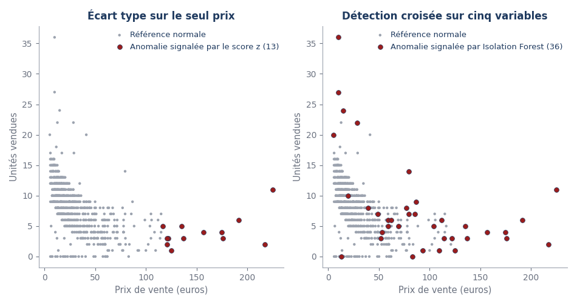
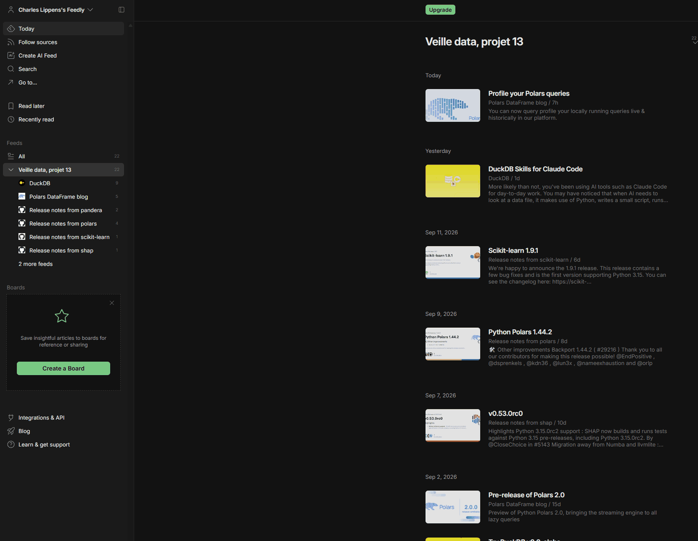

Charles Lippens
Data Analyst, posture de conseil. Des données fiables, des décisions explicables.
J'ai passé plus de dix ans dans les systèmes d'information : sept ans en ESN chez CGI, puis trois ans à mon compte, en développement web et en conseil informatique. Puis je me suis reconverti vers la donnée : sur le parcours Data Analyst d'OpenClassrooms, douze projets sont validés en soutenance, le treizième est en cours.
Pièce maîtresse : j'ai repris mon analyse d'un marchand de vins (projet 6) et je l'ai améliorée avec l'IA, en comparant chaque outil à une alternative. Lire la mission, puis la veille qui a fondé mes choix, le registre des quatorze projets avec leurs livrables et mes compétences.
- Situation
- Montpellier, Occitanie ; télétravail possible ; permis B.
- Disponibilité
- Stage de Consultant Data / BI et Data Analyst chez S4R à partir d'octobre 2026, environ deux mois ; disponible ensuite en CDI ou CDD, comme Data Analyst ou consultant data et BI.
- Formation
- Data Analyst, OpenClassrooms, titre RNCP de niveau 6, 2025 à 2026. Master 2 management des technologies de l'information et de la décision, IAE de Montpellier, 2015.
- Contact
- charles.lippens@orange.fr · GitHub · LinkedIn · CV au format PDF
Une reconversion qui s'appuie sur dix ans de systèmes d'information
En entreprise, j'ai maintenu des ERP, administré des parcs, développé des applications et conseillé des clients. L'analyse de données prolonge ce parcours, avec la même posture de conseil.
| Période | Rôle et organisation | Ce que j'y ai fait |
|---|---|---|
| 2025 à 2026 | Data Analyst, parcours certifiant, OpenClassrooms, Montpellier | Douze projets validés en soutenance : SQL, Python, Power BI, Tableau, dbt et Snowflake, statistiques, machine learning. Projet 13 en cours. Projet 14 : stage de consultant data et BI chez S4R, à partir d'octobre 2026, pour environ deux mois. |
| 2024 | Consultant support et systèmes, HRC Hardware Ressource Consulting, Le Crès | Support et conseil technique de niveaux 1 et 2, administration de parcs, réseaux et serveurs, plans de sauvegarde, documentation technique. |
| 2021 à 2023 | Développeur web full-stack et consultant en services informatiques, à mon compte, Montpellier | Sites et applications web conçus pour des clients : interfaces, back-end, bases de données ; projets soutenus devant un jury, titre RNCP de niveau 6 (parcours développeur web d'OpenClassrooms). Prestations de services et de conseil informatique (matériels, logiciels, réseaux, cloud) pour des particuliers et des professionnels, du diagnostic au devis et à la livraison. |
| 2013 à 2020 | Ingénieur consultant des technologies de l'information, CGI, Montpellier | Tierce maintenance applicative d'un ERP et d'un CRM grand compte : analyse, fiabilisation et correction d'anomalies de données ; extractions et traitements automatisés par scripts. |
| 2013 | Consultant BI et GED, Labosud, Saint-Aunès | Outils de reporting et indicateurs décisionnels pour le service qualité ; paramétrage d'une gestion électronique de documents, formation des utilisateurs. |
| 2011 et 2013 | Gestionnaire de parc et intégrateur web, Sup Telecom de Montpellier, puis Aguila, Lunel | Gestion de parc en autonomie, sites web et bases de données. |
Ma façon de travailler
Je remets le besoin en question avant d'outiller. Chaque projet commence par une reformulation du besoin en une phrase vérifiable, un périmètre qui dit aussi ce que je ne traite pas, et des critères de réussite fixés avant la recherche. C'est la posture de consultant que j'ai apprise en ESN chez CGI, puis à mon compte.
Je documente et je forme. Je veux qu'un livrable se comprenne sans moi : mes notebooks se relisent, mes tableaux de bord s'expliquent. Le guide de prise en main s'adresse aux utilisateurs métier, sans jargon ; il accompagne un plan de formation en quatre séquences, pensé aussi pour les collègues en situation de handicap.
Je vérifie mes propres résultats comme un évaluateur le ferait. J'ai audité le projet 13 en quatre passages : notebook réexécuté sur une autre machine, chaque chiffre publié comparé à la sortie du code, quarante écarts trouvés et corrigés.
BottleNeck : un notebook de qualité des données, repris et amélioré avec l'IA
Le projet 6 livrait déjà un rapprochement entre l'ERP et le site web d'un marchand de vins, un nettoyage rigoureux et la détection d'incohérences. Le projet 13 garde ce besoin, l'outille mieux et justifie chaque choix.
Ma méthode est celle d'un consultant : une veille datée pour trier les options, un cahier des charges pour cadrer, une preuve de concept en quatre axes, puis une décision tracée par axe. Chaque outil a été comparé à au moins une alternative sur sept critères identiques : qualité et robustesse, biais, coût en temps, reproductibilité, sécurité et conformité, maintenabilité, sobriété. Les traces (demandes, variantes, décisions) sont dans la documentation de la démarche ; les demandes de juin à août y sont reconstituées et signalées comme telles.
| Indicateur | Valeur | Lecture |
|---|---|---|
| Produits analysables après nettoyage et jointure (ERP, liaison, web) | 714 | Le référentiel sur lequel tout le reste repose. |
| Chiffre d'affaires reconstitué | 143 680 € | Pour 5 751 unités vendues. |
| Marge moyenne, rapportée au prix affiché | 47,4 % | Médiane à 48,3 % ; 36,9 % sur le prix hors taxe, définition du projet 6. |
| Types d'anomalies détectés | 9 | Le projet 6 en demandait au moins huit. |
| Références en rupture | 45 | À revoir avec les achats, en commençant par les 14 références clés de la ligne suivante. |
| Références clés à stock nul | 14 | Parmi les 435 qui font 80 % du chiffre d'affaires : 5 434 € de ventes en octobre, à réassortir d'abord. |
| Concentration du chiffre d'affaires | 435 réf. | 435 des 689 références qui vendent, soit 63 %, font 80 % du chiffre d'affaires : une concentration faible, loin d'un 20/80. |

Quatre axes d'amélioration, chacun testé et arbitré
Qualité des données : contrôles manuels contre contrat déclaratif
Pandera retenu, Great Expectations gardé en réserve.
Au projet 6, neuf contrôles manuels, environ 55 lignes non réutilisables, repéraient les erreurs. Pour les règles de l'ERP, ils laissent place à un contrat de données Pandera de 14 lignes, qui produit un rapport automatique et se rejoue à chaque extraction. Les contrôles du site et de la liaison restent dans la cellule d'audit. Sur les 825 lignes de l'ERP, 9 sont en infraction, soit 1,1 %, dont sept marges négatives, des références affichées sous leur prix d'achat.
Great Expectations, plus complet, a été comparé puis gardé en réserve : trop lourd pour un notebook unique, il deviendrait pertinent dans un pipeline industriel.

Performance et reproductibilité : pandas, Polars, DuckDB
Ne rien changer aujourd'hui, et savoir quand basculer.
À la volumétrie réelle, 825 lignes, aucun des trois moteurs ne dépasse 40 millisecondes le 4 août (pandas 9,9, Polars 2,5, DuckDB 32,3) : changer d'outil n'apporterait rien. Sur un test à deux millions de lignes, Polars est 4,1 fois et DuckDB 2,9 fois plus rapides que pandas le 4 août (exécution livrée). Sur mon poste, le 25 septembre, c'est 8,1 et 5,7 fois. Le gain dépend de la machine ; la décision ne change pas.
La décision est conditionnelle et documentée : garder pandas, et basculer le jour où la volumétrie le justifie. C'est la décision dont je suis le plus satisfait, parce qu'elle consiste à ne pas suréquiper.

Détection d'anomalies : score z et Isolation Forest
Le score z conservé pour sa transparence, Isolation Forest ajouté.
Le score z, univarié, ne voit que les prix extrêmes. Isolation Forest, multivarié, capte 26 références de plus : un prix de vente normal, mais une marge ou un volume aberrant. Exemple : une bouteille (référence 4355) affichée en ligne à 12,65 euros pour 77,48 euros d'achat, sans vente en octobre. Le Local Outlier Factor, sensible à son paramètre de voisinage, s'est révélé instable et a été écarté.
Les deux méthodes sont conservées ensemble : l'une pour l'explicabilité au métier, l'autre pour la couverture. Chaque anomalie signalée reste à vérifier avec le métier avant toute correction.

Interprétabilité : un modèle de ventes expliqué par SHAP
Le stock disponible est le premier facteur ; les avis clients, désactivés sur le site, ne disent rien.
Un modèle de gradient boosting prédit le volume de ventes. Sur le jeu de test, il atteint un R² de 0,72 (de 0,53 à 0,76 selon le découpage) et une erreur moyenne de 1,54 unité, deux fois moins qu'une prédiction naïve. SHAP le rend auditable, localement et globalement. Le stock disponible ressort loin devant le prix d'achat et la marge ; les avis clients ne pèsent rien, parce qu'ils sont désactivés sur le site et que leurs colonnes valent zéro.
Réserve : SHAP explique les prédictions du modèle ; il ne prouve aucune cause. Le lien peut même s'inverser, car on ne vend que ce qu'on a en stock. Je présente donc ce résultat comme une aide pour choisir quoi regarder en premier.

Rendre les équipes autonomes
Le guide de prise en main explique douze termes sans jargon, chacun avec une comparaison tirée du métier. Il accompagne quatre séquences de formation de 30 à 45 minutes, avec des fiches lisibles en noir et blanc et des chiffres aussi donnés en texte. Il fixe une routine : 5 minutes à chaque extraction pour lire le rapport du contrat de données, 20 minutes par semaine pour trancher les alertes, 30 minutes par mois pour le réassort. Une mise en situation vérifie que le service achats lit la restitution sans aide ; elle est prête et n'a pas encore eu lieu.
Les livrables de la mission
| Document | Contenu | Fichiers |
|---|---|---|
| Notebook amélioré | Analyse BottleNeck augmentée par l'IA, exécutée le 4 août 2026, figures incluses | IPYNB |
| Essais complémentaires | Notebook des essais A à D : Local Outlier Factor, importances face à SHAP, chiffres du réassort, stabilité du modèle | IPYNB |
| Documentation (livrable 2) | La démarche en 19 pages, de la veille au contrôle, avec les chiffres clés et les décisions | |
| Synthèse globale | Bilan métier, grille des indicateurs renseignée, feuille de route | PDF · Word |
| Veille technologique | Quatre axes, options comparées, sept critères, seize sources techniques et six sources métier, toutes datées | PDF · Word |
| Cahier des charges | Besoin reformulé, périmètre, contraintes, indicateurs, jalons, mini-plan de formation | PDF · Word |
| Gestion de projet | Lots, backlog, jalons, registre des risques, itérations | PDF · Word |
| Documentation de la démarche | Journal des essais, demandes, variantes, décisions, limites, procédures | PDF · Word |
| Guide de prise en main | Lecture des résultats sans jargon, glossaire de douze termes, mise en situation en trois exercices | PDF · Word |
| Audit de conformité | Indicateurs de qualité, attendus et chiffres publiés vérifiés ; quatre passages, quarante écarts corrigés | PDF · Word |
Des choix comparés, datés et sourcés
La veille justifie chaque décision technique. Pour chaque axe, au moins deux options ont été confrontées sur des critères explicites, puis tranchées. Les sources sont classées par fiabilité : documentation officielle, article scientifique, benchmark public, donnée ouverte, puis retour d'expérience.
Sept critères, identiques d'un axe à l'autre
- Qualité et robustesseFiabilité du résultat, comportement sur les cas limites.
- BiaisRisque de fausser ou de discriminer l'analyse.
- Coût en tempsTemps d'exécution et temps d'apprentissage.
- ReproductibilitéCapacité à rejouer à l'identique : versions figées, graine aléatoire.
- Sécurité et conformitéProtection des données, RGPD, absence de fuite vers un service tiers.
- MaintenabilitéLisibilité, intégration, dette technique induite.
- Sobriété et impactEmpreinte mémoire et calcul, proportion au besoin réel.
J'ai fixé les critères avant la recherche, pour ne pas les ajuster à l'outil préféré. Le septième, la sobriété, vient de l'indicateur de développement durable de la grille d'évaluation : éviter le suréquipement réduit l'empreinte de calcul autant que les coûts.
Axe 1, qualité des données : validation déclarative
Objectif
Contrôler la qualité dès la conception, avec des règles rejouées à chaque extraction, sans alourdir le notebook.
| Option | Forces | Limites | Décision |
|---|---|---|---|
| Contrôles manuels (pandas) | Aucune dépendance | Non réutilisables, environ 55 lignes, sans rapport | Écarté |
| Pandera | Léger, typé, 14 lignes, rapport automatique | Moins de gouvernance que Great Expectations | Retenu |
| Great Expectations | Documentation générée, magasin de résultats, gouvernance | Lourd à installer et à configurer | En réserve |
Axe 2, performance et reproductibilité : ne pas suréquiper
Objectif
Choisir le moteur de calcul adapté à la volumétrie réelle, avec une marge de montée en charge.
| Option | Forces | Limites | Décision |
|---|---|---|---|
| pandas | Standard, écosystème, lisible | Un seul fil d'exécution, gourmand en mémoire | Retenu à la volumétrie actuelle |
| Polars | Parallèle, évaluation paresseuse ; à deux millions de lignes, 4,1 fois plus rapide le 4 août et 8,1 fois le 25 septembre | Courbe d'apprentissage de l'API | Si montée en charge |
| DuckDB | SQL analytique, hors mémoire ; à deux millions de lignes, 2,9 fois plus rapide le 4 août et 5,7 fois le 25 septembre | Surcoût sur les petits volumes | Si gros fichiers ou SQL |
Axe 3, détection d'anomalies : univarié et multivarié
Objectif
Garder une détection explicable au métier, tout en captant les anomalies croisées.
| Option | Forces | Limites | Décision |
|---|---|---|---|
| Score z | Simple, explicable au métier | Univarié, rate les anomalies croisées | Conservé |
| Isolation Forest | Multivarié, stable d'une graine à l'autre, rapide | Seuil à valider, faux positifs possibles | Ajouté |
| Local Outlier Factor | Détecte les anomalies locales | Sensible au voisinage, moins stable | Écarté |
Axe 4, interprétabilité et documentation assistée
Objectif
Expliquer le modèle de façon auditable et accélérer la documentation, avec des demandes limitées au code et aux schémas.
| Option | Forces | Limites | Décision |
|---|---|---|---|
| Importances du modèle (gradient boosting) | Simple, intégré | Globales, parfois trompeuses | Insuffisant |
| SHAP | Explication locale et globale, théorie solide | Coût de calcul sur gros volumes | Retenu |
| Assistants d'IA générative | Documentation, tests, variantes de code | À relire et valider, risque de fuite | Retenu, encadré |
Une veille automatisée
Le dispositif tourne seul :
- Feedly : blogs officiels de Polars et de DuckDB, notes de version de pandas, pandera, polars, duckdb, scikit-learn et shap ;
- trois lettres d'information triées par thème : Data Elixir et Python Weekly chaque semaine, TLDR Data deux fois par semaine ;
- GitHub : suivi des nouvelles versions de pandera, polars, duckdb et shap ;
- Google Scholar : deux alertes, sur la validation de données et sur l'interprétabilité des modèles.
Je date chaque source lue et je note, dans la documentation de la démarche, la décision qu'elle a nourrie.

Veille métier : le marché du vin
Le marché recule : l'OIV compte 208 millions d'hectolitres de vin consommés dans le monde en 2025, en baisse de 2,7 %. Pour BottleNeck, l'enjeu est de mieux répartir le stock plutôt que de vendre plus, ce qui conforte le réassort. La liste des appellations de l'INAO, en données ouvertes, permettrait de lire chiffre d'affaires, marge et stock par appellation. Les règles de la vente d'alcool en ligne (vente interdite aux mineurs, loi Évin) encadrent toute action commerciale proposée à la direction.
Sources consultées
- 01pandera.readthedocs.io · documentation officielle, schémas de validation06/2026
- 02greatexpectations.io, blog · documentation officielle, Great Expectations face aux validations légères06/2026
- 03pola.rs et benchmark db-benchmark, lancé par H2O.ai et maintenu par DuckDB Labs · documentation et benchmark public, Polars face à pandas06/2026
- 04duckdb.org, benchmarks · documentation officielle, analytique embarquée06/2026
- 05scikit-learn.org, IsolationForest et LOF · documentation officielle, détection d'anomalies05/2026
- 06shap.readthedocs.io et Lundberg et Lee (2017) · documentation et article fondateur, valeurs de Shapley05/2026
- 07Data Elixir, Python Weekly · veille automatisée, tendances de l'outillagehebdomadaire
- 08CNIL, RGPD et intelligence artificielle · source officielle, conformité et protection des données dès la conception05/2026
- 09OIV, State of the World Wine Sector in 2025 · rapport annuel, consommation mondiale de vin09/2026
- 10INAO, aires et produits AOC/AOP et IGP · donnée ouverte, Licence Ouverte09/2026
Ces dix sources sont les principales. Le document de veille complet, avec ses seize sources techniques et ses six sources métier, nommées, datées et vérifiées, est téléchargeable dans la section précédente.
Quatorze projets, douze validés, chacun avec ses livrables réels
Chaque entrée suit la même trame : contexte et besoin, données, démarche, résultats et impact, limites et pistes, puis les livrables soutenus devant un évaluateur. Les cinq premiers, marqués ✶, sont classés par pertinence pour un poste de Data Analyst ou de consultant data et BI, puis par résultat mesuré, puis par date. Les autres suivent, du plus récent au plus ancien.
P13
Piloter un projet data augmenté par l'IA et construire ce dossier
Mission BottleNeck, marchand de vins, et portfolio
9 lignes en infraction sur 825 · 26 anomalies en plus · R² 0,72 (0,53 à 0,76)
Contexte et besoin :des chiffres fiables de ventes, de marges et de stocks chaque mois. La direction et les services de BottleNeck en ont besoin pour décider quoi réassortir en priorité et quelles erreurs faire corriger dans l'ERP et sur le site.
Données :les trois extractions du projet 6 (ERP, site, liaison), 825 lignes ERP, 714 produits rapprochés, aucune donnée personnelle ; extraction ponctuelle sans historique.
Démarche :veille datée, cahier des charges, preuve de concept en quatre axes (qualité, performance, anomalies, interprétabilité), chaque outil comparé à au moins une alternative sur sept critères, audit de conformité en quatre passages.
Résultats et impact :les règles de l'ERP tiennent en 14 lignes dans un contrat Pandera, contre environ 55 pour les neuf contrôles manuels du projet 6. Isolation Forest capte 26 anomalies de plus. Un modèle de ventes expliqué par SHAP atteint un R² de 0,72 (de 0,53 à 0,76 selon le découpage). Le réassort part de 14 références clés à stock nul, et pandas reste le moteur à la volumétrie actuelle.
Limites et pistes :échantillon réduit, pouvoir explicatif variable selon le découpage, anomalies à confirmer avec le métier, modèle qui explique ses prédictions sans prouver de causes, gain de calcul qui dépend de la machine. Pistes : contrôle qualité branché sur chaque import, historisation des ventes, prévision de la demande, rapport mensuel automatisé.
P11
Étude de marché internationale
La poule qui chante, poulet bio, export
21 pays · 2,1 Md$ · indice de Rand ajusté 0,58
Contexte et besoin :désigner des groupes de pays cibles pour un premier export, à partir de données ouvertes seulement.
Données :neuf fichiers ouverts (FAO 2017, population 2000 à 2018, Banque mondiale, gouvernance, taux de change figé au 30 juillet 2026) ; 172 pays conservés, 97,6 % de la population mondiale.
Démarche :14 variables (FAO, Banque mondiale, taux de change), dont cinq construites. Analyse en composantes principales à quatre composantes (65 % de l'inertie), puis classification hiérarchique et K-Means comparés : indice de Rand ajusté 0,58.
Résultats et impact :un cluster cible de 21 pays et 2,1 milliards de dollars de potentiel de marché, États-Unis, Chine, Brésil, Japon et Royaume-Uni en tête. Plan d'action à 24 mois présenté au COMEX, avec un pilote recommandé en Allemagne ou au Royaume-Uni.
Limites et pistes :données de 2017 pour les bilans alimentaires, indicateurs macro sans détail des circuits de distribution, taux de change figé pour la reproductibilité. Pistes : actualiser les millésimes, ajouter des données douanières, mesurer la sensibilité des clusters au nombre de variables.
P10
Étude sur l'accès à l'eau potable
ONG DWFA, Drinking Water For All
89,7 % d'accès · 16 pays sous 60 %
Contexte et besoin :orienter un financement vers un pays et un domaine d'expertise, avec un tableau de bord accessible et narratif.
Données :cinq sources ouvertes (OMS et UNICEF, ONU, FAO, Banque mondiale), 194 pays de 2000 à 2017.
Démarche :prétraitement en Python et schéma en étoile ; blueprint et maquettes validés avant d'ouvrir l'outil ; quatre vues enchaînées dans une histoire Tableau Public.
Résultats et impact :89,7 % d'accès basique mondial, 870 000 décès liés à l'eau insalubre en 2016, 16 pays sous 60 % d'accès. Le tableau de bord cible les pays par domaine d'expertise, avec un seuil de stabilité politique réglable. Contrastes et légendes respectent les règles d'accessibilité.
Limites et pistes :agrégats nationaux qui masquent les disparités régionales, séries arrêtées en 2017, indicateurs de stabilité politique subjectifs. Pistes : données infranationales, actualisation annuelle, indicateur composite pondéré avec l'ONG.
P8
Profils sociodémographiques avec dbt et Snowflake
Pipeline de données, entrepôt Snowflake
4 647 lignes · tests dbt à chaque exécution
Contexte et besoin :industrialiser la préparation de données avec un pipeline fiable et testé.
Données :4 647 lignes d'étudiants OpenClassrooms de 2022 à 2025 et estimations de population INSEE 2023 ; genre non renseigné conservé comme catégorie, réinscriptions traitées comme lignes légitimes.
Démarche :modèles dbt sur Snowflake, couches de staging et de marts, tests de cohérence, documentation et versionnage, agrégations conformes au RGPD.
Résultats et impact :un modèle documenté et reproductible, dont la qualité est vérifiée automatiquement à chaque exécution.
Limites et pistes :taux de non-réponse sur le genre, variable selon l'année, comparaison à une seule année INSEE, région de résidence déclarative. Pistes : tests dbt sur la fraîcheur des sources, historisation des comparaisons, tableau de bord branché sur les marts.
P7
Tableau de bord dynamique Power BI
Sanitoral, groupe international, suivi de projets
104 projets · 520 phases · alerte au-delà de 15 % d'écart
Contexte et besoin :suivre l'avancement d'un portefeuille de projets à l'international.
Données :plan de projets, coûts et livrables du fabricant Sanitoral, préparés avec Power Query, clés uniques contrôlées, modèle en étoile.
Démarche :modèle de données, mesures DAX, tableau de bord de pilotage, posture de consultant pour cadrer les indicateurs avec le client.
Résultats et impact :un tableau de bord Power BI de neuf pages, validé en soutenance, qui suit 104 projets IT et marketing découpés en 520 phases, en vue globale, par pays et par projet. Des mesures DAX mettent en évidence chaque dépassement de plus de 15 % du prévu sur les coûts, les délais ou les livrables, et l'analyse débouche sur quatre axes de recommandation.
Limites et pistes :données figées à la remise, types de graphiques peu variés, quelques visuels de questions et réponses à corriger selon l'évaluateur. Pistes : actualisation planifiée, rôles et filtres par direction, alertes sur les dépassements.
P12
Détecter des faux billets avec Python
ONCFM, lutte contre le faux-monnayage
F1 0,993 · ROC-AUC 0,9995 · seuil 0,69
Contexte et besoin :décider si un billet est vrai ou faux à partir de six mesures géométriques.
Données :1 500 billets (1 000 vrais, 500 faux), six dimensions géométriques, 37 valeurs manquantes ; jeu fourni par l'ONCFM, sans historique de contrefaçons.
Démarche :imputation par régression des valeurs manquantes, puis analyse en composantes principales. Quatre modèles comparés en validation croisée : régression logistique, k plus proches voisins, random forest, K-Means par ses centroïdes. Seuil arbitré selon le coût des erreurs.
Résultats et impact :régression logistique retenue, sauvegardée en joblib avec sa mise à l'échelle (StandardScaler). Sur le jeu de test : 99,0 % de bonnes classifications, F1 0,993, ROC-AUC 0,9995 ; résultat stable en validation croisée (F1 0,9945, écart-type 0,0024). Un seuil porté à 0,69 intercepte 100 % des faux billets du test, pour deux contrôles manuels de plus. Application Streamlit et application en terminal livrées : sur les cinq billets de production, trois faux détectés et deux vrais validés.
Limites et pistes :jeu d'entraînement modeste, dérive possible si les contrefaçons évoluent, probabilités non calibrées, modèle linéaire ; l'évaluateur demande plus de lisibilité dans la présentation (légendes des corrélations). Pistes : calibration, détection d'anomalies pour les billets atypiques, suivi de dérive et réentraînement, industrialisation via une API.
P9
Analyse des ventes d'une librairie
Lapage, librairie passée à la vente en ligne
12,0 M€ sur 24 mois · 80 % du CA sur 700 produits · 7,4 % du CA pour 4 clients B2B
Contexte et besoin :comprendre les ventes et les comportements clients pour orienter le marketing.
Données :transactions, produits et clients de la librairie Lapage sur deux ans, jointes et nettoyées ; comportements B2B et B2C distingués.
Démarche :indicateurs et séries temporelles, analyse des corrélations entre comportements, tests statistiques pour valider ou infirmer les hypothèses.
Résultats et impact :12,0 millions d'euros de chiffre d'affaires sur 24 mois, stable autour de 501 000 euros par mois. Les 700 premiers produits (21,4 % des références vendues) en font 80 %, quatre clients B2B 7,4 %. J'ai testé cinq liens entre profil et comportement d'achat sur 8 596 clients B2C. Le genre ne change presque rien à la catégorie achetée (V de Cramér de 0,006). L'âge pèse nettement sur la catégorie préférée (êta² de 0,22) et sur le panier moyen, qui baisse quand l'âge augmente (corrélation de -0,70). Six recommandations en découlent, fondées sur ces tests plutôt que sur des impressions.
Limites et pistes :deux années seulement pour lire la saisonnalité, tests non paramétriques après un test de normalité négatif, tailles d'effet négligeables ou faibles pour trois des cinq tests, malgré des p-valeurs significatives. Pistes : troisième année d'historique, segmentation clients plus fine, suivi mensuel des indicateurs.
P6
Optimiser la gestion des données d'une boutique
BottleNeck, marchand de vins
714 produits · 9 types d'anomalies · 143 680 €
Contexte et besoin :rapprocher l'ERP et le site web pour fiabiliser le catalogue et reconstituer le chiffre d'affaires.
Données :ERP (825 lignes), site de vente (1 513 lignes) et table de liaison de BottleNeck ; unicité des clés vérifiée, valeurs manquantes traitées.
Démarche :nettoyage, jointures, détection d'incohérences, analyses uni- et multivariées, respect du RGPD.
Résultats et impact :une base saine de 714 produits, 9 types d'anomalies identifiés, un chiffre d'affaires reconstitué de 143 680 euros ; le socle du projet 13.
Limites et pistes :détection d'anomalies sur une seule variable, contrôles écrits à la main non rejouables, aucun facteur explicatif des ventes. L'évaluateur a signalé le risque de corriger un prix négatif par sa valeur absolue. Pistes : celles réalisées dans le projet 13, contrat de données qui signale sans corriger, détection multivariée, explication des ventes.
P5
Base de données immobilière sous SQL et PostgreSQL
Secteur immobilier, modélisation
34 151 ventes · 12 requêtes SQL · 11 916 € le m² à Paris
Contexte et besoin :un modèle de données conforme aux besoins et aux normes.
Données :valeurs foncières DVF, recensement INSEE et référentiel communal de data.gouv, vérifiées au regard du RGPD puis chargées dans les quatre tables du schéma normalisé (Region, Commune, Bien, Vente).
Démarche :conception du schéma, dictionnaire de données, requêtes en respect du RGPD sur PostgreSQL.
Résultats et impact :un modèle documenté, exploitable durablement par les équipes métier : quatre tables PostgreSQL (34 151 ventes) et douze requêtes métier. Au premier semestre 2020, 31 378 appartements ont été vendus, dont 13 995 en Île-de-France. Le mètre carré vaut en moyenne 11 916 euros à Paris, et les ventes augmentent de 3,7 % du premier au deuxième trimestre.
Limites et pistes :schéma visuel jugé à détailler et section de maintenance à ajouter par l'évaluateur, extraction limitée à 2020. Pistes : index et procédures de maintenance, historisation annuelle, vues métier pour les agences.
P4
Étude de santé publique avec Python
FAO, sous-nutrition mondiale
535,7 millions en sous-nutrition · 7 % de la population · 123 % des besoins couverts
Contexte et besoin :mesurer la sous-nutrition à l'échelle mondiale et la restituer à un public non expert.
Données :bilans alimentaires et données démographiques de la FAO, jointes, restreintes et agrégées, conformité RGPD vérifiée.
Démarche :nettoyage de données massives, indicateurs normalisés, vulgarisation.
Résultats et impact :des indicateurs comparables entre pays et une restitution accessible aux décideurs. En 2017, 535,7 millions de personnes sont en sous-nutrition, soit 7 % de la population mondiale. Pourtant, les disponibilités alimentaires suffiraient à nourrir 9,3 milliards de personnes, 123 % de la population (102 % avec les seuls végétaux). Haïti est le pays le plus touché en proportion, avec 48 % de sa population en sous-nutrition. Quant aux principales céréales, 36 % servent à nourrir les animaux, contre 43 % pour l'alimentation humaine.
Limites et pistes :indicateurs nationaux sans détail infranational, hypothèses de conversion des disponibilités alimentaires. Pistes : séries pluriannuelles, croisement avec des données de prix, visualisation interactive.
P3
Requêter une base de données avec SQL
Assurance habitation
12 requêtes SQL · plus de 30 000 contrats · 14 177 en Île-de-France
Contexte et besoin :outiller la décision à partir d'une base relationnelle.
Données :contrats d'assurance habitation et référentiel des régions de data.gouv, chargés dans un SGBD avec contrôle du nombre de lignes.
Démarche :chargement, schéma, scripts SQL d'aide à la décision, méthodologie documentée.
Résultats et impact :les douze requêtes SQL demandées, prêtes à l'emploi pour les questions métier récurrentes, exécutées sur plus de 30 000 contrats chargés dans MySQL. L'Île-de-France réunit le plus de contrats (14 177), Paris a la cotisation mensuelle moyenne la plus élevée des départements, et 589 contrats des Pays de la Loire sont en formule intégrale.
Limites et pistes :indicateurs jugés perfectibles sur le plan métier par l'évaluateur, support visuel à améliorer. Pistes : requêtes orientées décision (sinistralité, marge), vues et procédures stockées.
P2
Analyse de ventes pour un e-commerce
Le Grand Marché, service marketing
Conversion divisée par 2 · temps médian avant achat de 7,1 à 6,2 min
Contexte et besoin :un rapport mensuel exploitable par le marketing.
Données :ventes, chiffre d'affaires, prix et taux de conversion du Grand Marché, données des clients affiliés ; graphiques conformes aux contrastes AA et AAA.
Démarche :analyse des ventes et des clients, dataviz, récit adapté à l'auditoire.
Résultats et impact :cinq graphiques qui éclairent les arbitrages. Le chiffre d'affaires baisse avec la disparition du high-tech, malgré la hausse de la nourriture. Le taux de conversion a été divisé par deux : les visites, amenées de plus en plus par l'affiliation, ont augmenté bien plus vite que les ventes. Le temps médian passé sur le site avant un achat a baissé de 7,1 à 6,2 minutes. Trois pistes en découlent pour le marketing : miser sur la nourriture, tester promotions et reciblage publicitaire, retravailler le parcours d'achat.
Limites et pistes :une seule année observée, de mars 2019 à février 2020, projections indicatives, comparaison au marché sur des références externes. L'évaluateur invite à creuser l'utilisabilité des graphiques (rapport données-encre, facteur de mensonge, ratios d'accessibilité AA et AAA). Pistes : suivi mensuel automatisé, segmentation des affiliés, tableau de bord partagé.
P1
Prise en main de la formation Data Analyst
Cadrage du parcours
Contexte et besoin :poser les bases du métier et de la posture.
Données :fiches de cadrage et grille d'auto-évaluation de début de parcours, sans jeu de données.
Démarche :cadrage du parcours, compétences relationnelles, posture du data analyst.
Résultats et impact :une feuille de route et une posture professionnelle dès le départ.
Limites et pistes :auto-évaluation initiale par nature subjective ; qualité des visuels signalée comme axe de progrès. Pistes : relire la grille en fin de parcours pour mesurer la progression.
P14
Mission en entreprise : Consultant Data / BI et Data Analyst chez S4R
S4R, stage d'environ deux mois, dernière étape avant le diplôme
Contexte et besoin :mettre l'ensemble des compétences à l'épreuve d'un besoin métier réel.
Données :celles de la mission, à décrire après accord de l'entreprise.
Démarche :mission data en entreprise, du cadrage du besoin aux tableaux de bord et à la restitution.
Résultats et impact :à venir ; les livrables de la mission seront ajoutés ici après la soutenance.
Limites et pistes :à rédiger à l'issue du stage, avec les livrables partageables.
Aucun projet ne correspond à ce filtre.
Ce que je sais faire, et où je l'ai prouvé
Chaque compétence renvoie à au moins un projet du registre ; aucune n'est déclarée sans preuve.
- Langages et données
- SQL (PostgreSQL, MySQL, Snowflake), modélisation relationnelle et dictionnaire de données (P3, P5). Python avec pandas et NumPy (P4, P6, P9, P11, P12), Polars et DuckDB évalués sur banc d'essai (P13). Statistiques, tests d'hypothèses et séries temporelles (P9). Excel : tableaux et graphiques (P2).
- Machine learning et intelligence artificielle
- scikit-learn : analyse en composantes principales, classification hiérarchique et K-Means (P11), régression logistique, k plus proches voisins, random forest (P12), Isolation Forest et gradient boosting (P13). Interprétabilité par SHAP, qualité des données par contrat Pandera, assistants d'IA générative encadrés et journalisés (P13).
- Dataviz et Business Intelligence
- Power BI avec Power Query et DAX (P7), Tableau Public (P10), récit des résultats et visualisations accessibles (P2, P4, P10), reporting orienté décision.
- Data engineering et outils
- dbt et Snowflake (P8), PostgreSQL (P5), Git et GitHub (un dépôt par projet), Jupyter (P4, P6, P9, P11, P12, P13).
- Langues
- Français, langue maternelle. Anglais professionnel, lecture technique courante. Espagnol, notions.
Posture
- ConseilJe reformule le besoin en une phrase vérifiable et je fixe les critères de réussite avant de produire.
- PédagogieJe vulgarise sans appauvrir, j'écris pour les utilisateurs métier et je forme à la prise en main.
- RigueurVersions notées, graine fixée, chaque chiffre publié comparé à la sortie du code.
- Esprit critiqueChaque outil est testé contre une alternative ; garder l'existant est une décision comme une autre, quand elle est justifiée.
Ce qu'en disent les évaluateurs
- Projet 6, décembre 2025« Le notebook est de très bonne qualité : clair, structuré, bien commenté et méthodologiquement solide. »
- Projet 9, mai 2026« L'étudiant a fait la différence entre la p-value significative et la taille d'effet réelle. »
- Projet 12, septembre 2026« La soutenance était très claire et permet de bien comprendre l'ensemble du travail réalisé. »
Parlons de votre besoin
Un besoin à cadrer, un tableau de bord à concevoir, une analyse à fiabiliser, un pipeline à tester : écrivez-moi, je réponds sous deux jours ouvrés.
- Courriel
- charles.lippens@orange.fr
- GitHub
- github.com/CharlesLippensData, les dépôts de chaque projet du parcours
- Profil LinkedIn
- Lieu
- Montpellier, Occitanie ; télétravail ou mode hybride possible, déplacements en France.